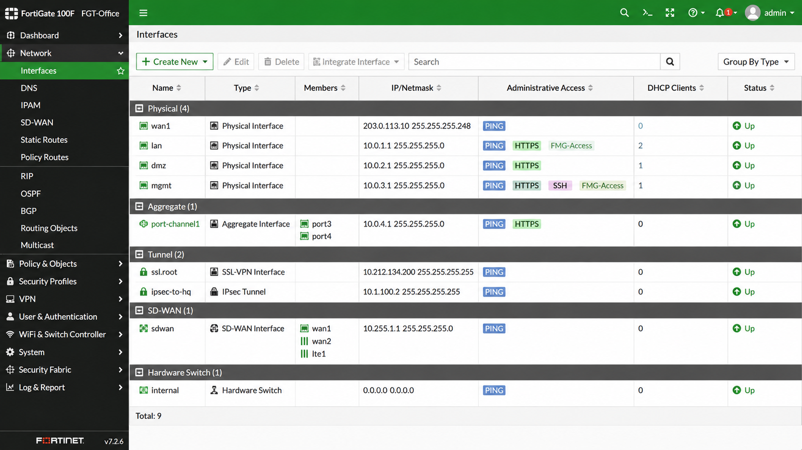

Objective
This check verifies that the firewall network interfaces are operational.
Firewall interface issues can impact:
- Internet connectivity
- LAN communication
- VPN availability
- Network segmentation
Prerequisites
- Access to the firewall management interface
- User account with read or admin permissions
Verify Firewall Interfaces
Open the firewall management interface and verify the interface status.
 Example: FortiGate → Network → Interfaces
Example: FortiGate → Network → Interfaces
Verify that:
- WAN and LAN interfaces are online
- No interface is disconnected or down
- No abnormal interface errors are present

Result Interpretation
- ✅ OK – Firewall interfaces are operational and connected.
- ⚠️ WARNING – Minor interface issues or inactive interfaces detected.
- ❌ NOK – Critical interfaces are disconnected, down, or unstable.